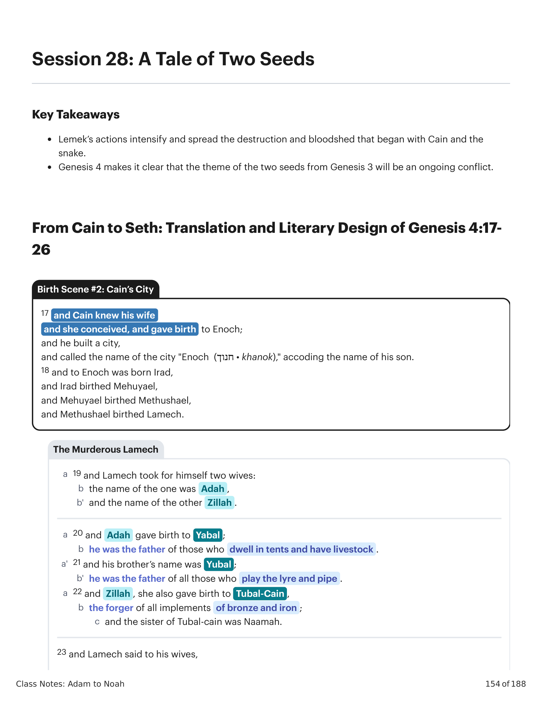
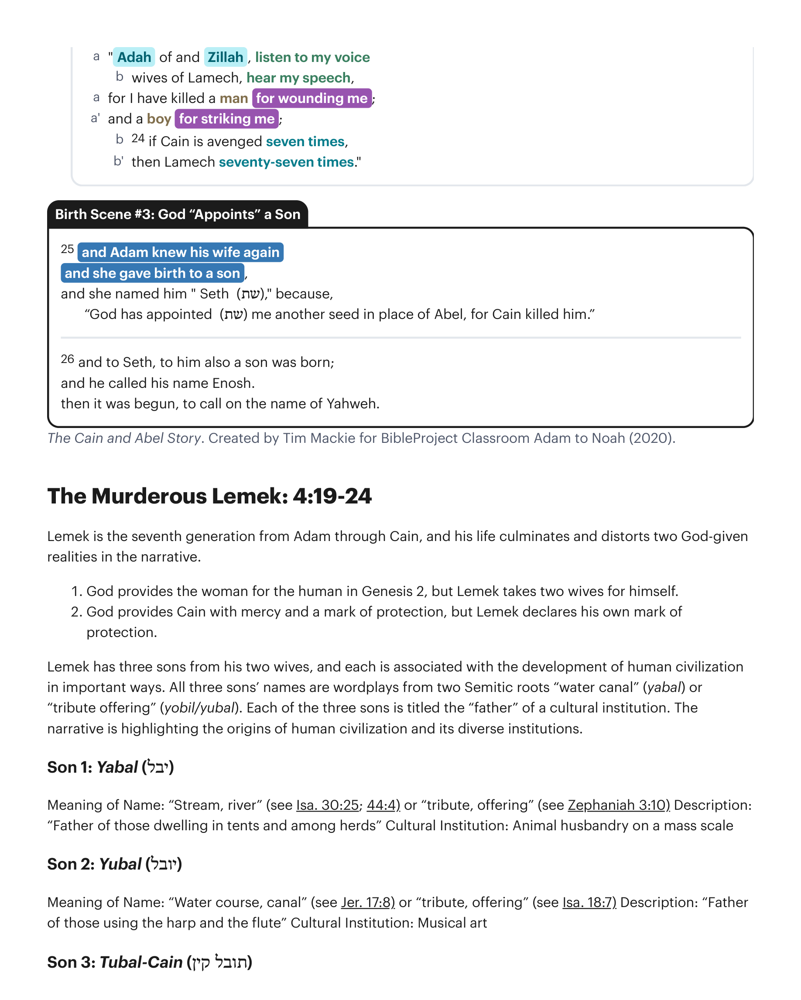
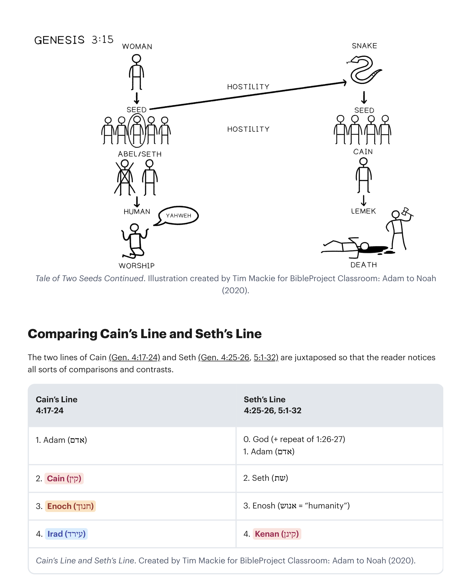

Leméque é a sétima geração de Adão através de Caim, e sua vida culmina e distorce duas realidades dadas por Deus na narrativa. 1. Deus provê a mulher para o humano em Gênesis 2, mas Leméque toma duas esposas para si. 2. Deus prové Caim com misericórdia e uma marca de proteção, mas Leméque declara sua própria marca de proteção. Leméque tem três filhos de suas duas esposas, e cada um está associado com o desenvolvimento da civilização humana de maneiras importantes. Os nomes dos três filhos são trocadilhos de duas raízes semíticas "canal de água" (yabal) ou "oferta de tributo" (yobil/yubal). Cada um dos três filhos é intitulado o "pai" de uma instituição cultural. A narrativa está destacando as origens da civilização humana e de suas diversas instituições. Filho 1: Jabal (יבל) — Significado do Nome: "Riacho, rio" (veja Is 30:25; 44:4) ou "tributo, oferta" (veja Sofonias 3:10). Descrição: "Pai dos que habitam em tendas e entre rebanhos." Instituição Cultural: Pecuária em escala massiva. Filho 2: Jubal (יובל) — Significado do Nome: "Curso de água, canal" (veja Jr 17:8) ou "tributo, oferta" (veja Is 18:7). Descrição: "Pai dos que usam harpa e flauta." Instituição Cultural: Arte musical. Filho 3: Tubal-Caim (תובל קין) — Significado do Nome: "Oferta de tributo de Caim." Descrição: "Martelador dos que trabalham com ferro e bronze." Instituição Cultural: Metalurgia.Lemek is the seventh generation from Adam through Cain, and his life culminates and distorts two God-given realities in the narrative. 1. God provides the woman for the human in Genesis 2, but Lemek takes two wives for himself. 2. God provides Cain with mercy and a mark of protection, but Lemek declares his own mark of protection. Lemek has three sons from his two wives, and each is associated with the development of human civilization in important ways. All three sons' names are wordplays from two Semitic roots "water canal" (yabal) or "tribute offering" (yobil/yubal). Each of the three sons is titled the "father" of a cultural institution. The narrative is highlighting the origins of human civilization and its diverse institutions. Son 1: Yabal (יבל) — Meaning of Name: "Stream, river" (see Isa. 30:25; 44:4) or "tribute, offering" (see Zephaniah 3:10). Description: "Father of those dwelling in tents and among herds." Cultural Institution: Animal husbandry on a mass scale. Son 2: Yubal (יובל) — Meaning of Name: "Water course, canal" (see Jer. 17:8) or "tribute, offering" (see Isa. 18:7). Description: "Father of those using the harp and the flute." Cultural Institution: Musical art. Son 3: Tubal-Cain (תובל קין) — Meaning of Name: "Tribute offering of Cain." Description: "Hammerer of those fashioning with iron and bronze." Cultural Institution: Metallurgy.

Este relato teria ficado em contraste com os vizinhos de Israel e suas narrativas para as origens da pecuária, música e metalurgia. Todos estes são vistos como sabedoria divina recebida dos deuses. "[O] desenvolvimento das artes da civilização no antigo Oriente Próximo era tipicamente atribuído aos deuses. [Na mitologia mesopotâmica] elas foram introduzidas à raça humana pelos sete sábios divinos (chamados apkallu). No Mito de Inanna e Enki, a deusa padroeira de Uruk tenta adquirir as artes da civilização de Enki, o senhor de Eridu. Entre as noventa e quatro 'artes' mencionadas no texto estão ofícios como realeza e sacerdócio; objetos como espada e aljava; ações como correr, beijar e fazer amor; qualidades como heroísmo ou desonestidade; e abstrações como entendimento e conhecimento. Mas pertinentes a esta passagem, a lista também inclui o ofício do caldeireiro (junto com outros ofícios), o alaúde ressonante e a arte do canto, e o redil de ovelhas." "No fim, a construção de cidades era um empreendimento divino. Dentro desta tradição, a construção de cidades estava relacionada, e era parte, da criação, porque a criação envolvia o estabelecimento do mundo como os mesopotâmios o conheciam — não apenas em termos do cosmo físico, mas também incluindo o aspecto civilizado do mundo social e econômico. Em contraste, Gênesis vê a construção de cidades em termos puramente humanos." "Os mesopotâmios criam que a humanidade era inicialmente bárbara e primitiva. A civilização, consistindo de cidades, realeza, artes, ciências e tecnologia, entre outras coisas, era um dom dos deuses, dado aos humanos pelos deuses. Uma vez que os humanos receberam estes elementos civilizadores dos deuses, eles foram além de seu estado inicial de primitivismo e se tornaram civilizados."This account would have stood in contrast to Israel's surrounding neighbors and their accounts for the origins of animal husbandry, music, and metallurgy. These are all viewed as divine wisdom received from the gods. "[T]he development of the arts of civilization in the ancient Near East was typically attributed to the gods. [In Mesopotamian mythology] they were introduced to the human race by the seven divine sages (called the apkallu). In the Myth of Inanna and Enki, the patron goddess of Uruk, attempts to procure the arts of civilization from Enki, the lord of Eridu. Among the ninety-four 'arts' mentioned in the text are offices such as kingship and priesthood; objects such as sword and quiver; actions such as running, kissing, and lovemaking; qualities such as heroism or dishonesty; and abstractions such as understanding and knowledge. But pertinent to this passage, the list also includes the craft of the coppersmith (along with other crafts), the resounding lute and the art of singing, and the sheepfold." "In the end, city building was a divine enterprise. Within this tradition, city building was related to, and a part of, creation, because creation involved the establishment of the world as the Mesopotamians knew it—not only in terms of the physical cosmos, but also including the civilized aspect of the social and economic world. In contrast, Genesis sees city building in purely human terms." "[T]he Mesopotamians believed that humankind was initially barbaric and primitive. Civilization, consisting of cities, kingship, arts, sciences and technology, among other things, was a gift from the gods, given to humans by the gods. Once humans received these civilizing elements from the gods, they moved beyond their initial state of primitivism and became civilized."
Walton, John H. (2001). Gênesis: Comentário Ilustrado dos Bastidores Bíblicos Zondervan Vol. 1. Zondervan Academic. Lowry, Daniel D. (2013). Rumo a uma Poética de Gênesis 1-11. Eisenbrauns.Walton, John H. (2001). Genesis: Zondervan Illustrated Bible Backgrounds Commentary Vol. 1. Zondervan Academic. Lowry, Daniel D. (2013). Toward a Poetics of Genesis 1-11. Eisenbrauns.
O terceiro filho de Leméque, Tubal-Caim, é uma referência a Caim, o assassino. Adicionalmente, Tubal-Caim está associado com a metalurgia — informação que nos é dada logo antes da canção assassina de seu pai infere um tom sinistro e sombrio ao "trabalho em metal" de Tubal-Caim. Isto traz à mente uma espada, que é precisamente a interpretação oferecida na tradição judaica antiga (veja Gênesis Rabbá 22:2-3). O design literário de Gênesis 4 leva o leitor a ver o advento da cidade e da metalurgia como desenvolvimentos altamente ambíguos, ou mesmo negativos, por causa de sua associação com a violência assassina de Caim e Leméque. 4:1-16: O assassinato de seu irmão por Caim é vingado sete vezes. 4:17: A cidade/filho Enoque de Caim é uma civilização que multiplica o assassinato. 4:21-22: O filho Tubal-Caim de Leméque cria uma civilização que inventa armas. 4:22-23: O assassinato de um jovem por Leméque é vingado setenta e sete vezes.Lemek's third son's name, Tubal-Cain, is a reference to Cain the murderer. Additionally, Tubal-Cain is associated with metallurgy—information we are given right before his father's murderous song infers an ominous and dark tone to Tubal-Cain's "metal work." This brings to mind a sword, which is precisely the interpretation offered in ancient Jewish tradition (see Genesis Rabbah 22:2-3). The literary design of Genesis 4 leads the reader to view the advent of the city and metallurgy as highly ambiguous, or even negative, developments because of their association with the murderous violence of Cain and Lemek. 4:1-16: Cains murder of his brother is avenged seven times. 4:17: Cain's son/city Enoch is a civilization that multiplies murder. 4:21-22: Lemek's son Tubal-Cain creates a civilization that invents weapons. 4:22-23: Lemek's murder of a young man is avenged seventy-seven times.
Gênesis 4:23 (NVI*): "Matei um homem por me ferir (פצע); e um jovem por me contundir (חבורה)." *Palavras-Chave Adaptadas pelo Professor. Êxodo 21:23-25 Tradução do Instrutor: "23 Mas se houver alguma lesão, então designarás: vida por vida, 24 olho por olho, dente por dente, mão por mão, pé por pé, 25 queimadura por queimadura, ferida por ferida (פצע), contusão por contusão (חבורה)." Leméque tanto excedeu o limite divinamente ordenado de retaliação quanto redefiniu a lei divina por sua própria autoridade. É interessante que tanto os assassinatos de Caim e Leméque quanto as consequências sejam definidos na linguagem das leis posteriores da aliança do Sinai.Genesis 4:23 NIV*: "I have killed a man for wounding (פצע) me; and a young man for bruising me (חבורה)." *Key Words Adapted by Teacher. Exodus 21:23-25 Instructor's Translation: "23 But if there is any injury, then you shall assign: life for life, 24 eye for eye, tooth for tooth, hand for hand, foot for foot, 25 burn for burn, wound for wound (פצע), bruise for bruise (חבורה)." Lemek has both exceeded the divinely ordained limit of retaliation and redefined the divine law by his own authority. It is interesting that both Cain and Lemek's murders and the consequences are defined in the language of the later Sinai covenant laws.
| Birth of Cain and Abel (4:1-2)Birth of Cain and Abel (4:1-2) | Cain Murders Abel (4:3-16)Cain Murders Abel (4:3-16) | Cain's Family Line (4:17-18)Cain's Family Line (4:17-18) | Lemek Murders Another (4:19-24)Lemek Murders Another (4:19-24) | Birth of Seth to Replace Abel (4:25-26)Birth of Seth to Replace Abel (4:25-26) |
|---|---|---|---|---|
| "And the human knew Eve his wife and she conceived and gave birth…""And the human knew Eve his wife and she conceived and gave birth…" | And Cain knew his wife, and she conceived and gave birth…And Cain knew his wife, and she conceived and gave birth… | And human again knew his wife and she gave birth…And human again knew his wife and she gave birth… | ||
| Eve boasts in her "divine" power (4:1) to create a "man" (איש)Eve boasts in her "divine" power (4:1) to create a "man" (איש) | Lemek boasts in his "divine" authority (4:24) to kill a "man" (איש)Lemek boasts in his "divine" authority (4:24) to kill a "man" (איש) | Eve humbly receives the gift of another son (4:25)Eve humbly receives the gift of another son (4:25) | ||
| Narrative of murder and remorseNarrative of murder and remorse | Narrative of murder and celebrationNarrative of murder and celebration | |||
| Cain's response is described in terms of Sinai covenant law about cities of refuge: DeutCain's response is described in terms of Sinai covenant law about cities of refuge: Deut | Lemek's response is described in terms of Sinai covenant law about retaliation: Exodus 21:25Lemek's response is described in terms of Sinai covenant law about retaliation: Exodus 21:25 | |||
| 19:10-12 Seven times19:10-12 Seven times | Seventy-seven timesSeventy-seven times | |||
| Child is named in relation to Yahweh (4:1)Child is named in relation to Yahweh (4:1) | City is named in relation to humans ("the name of his son" 4:17)City is named in relation to humans ("the name of his son" 4:17) | Child named in relation to God (4:26), resulting in true worship.Child named in relation to God (4:26), resulting in true worship. | ||
| Cain's and Lemek's Response. Created by Tim Mackie for BibleProject Classroom: Adam to Noah (2020).Cain's and Lemek's Response. Created by Tim Mackie for BibleProject Classroom: Adam to Noah (2020). | ||||
"Setenta e sete vezes [literalmente, 'setenta e sete'] — isto é, setenta e sete vezes tanto. O número, escusado será dizê-lo, não deve ser tomado literalmente. Sete vezes significa em medida perfeita (veja acima, sobre v. 15); setenta e sete vezes significa em medida transbordante, mais do que é devido, muitos por um.""Seventy-sevenfold [literally, 'seventy-seven'] /—that is, seventy-seven times as much. The number, needless to say, is not to be taken literally. Sevenfold means in perfect measure (see above, on v. 15); seventy-sevenfold signifies in overflowing measure, more than is due, many for one."
Cassuto, U. (1961). Um Comentário sobre o Livro de Gênesis (Parte I): de Adão a Noé. Magnes Press.Cassuto, U. (1961). A Commentary on the Book of Genesis (Part I): from Adam to Noah. Magnes Press.
"Embora Caim, ancestral de Lameque, fosse vingado sete vezes por Deus, Lameque toma nas próprias mãos satisfazer seu desejo de vingança através de uma retaliação setenta e sete vezes. Neste ponto, o princípio da justiça retributiva é levado ao ponto de se tornar a caricatura de si mesmo. Além disso, há uma profunda ironia na ousadia de Lameque de referir-se à proteção divina de seu ancestral Caim. A 'imunidade' de Lameque, em contraste, é à custa de violência ilimitada, ele transformou a graça divina para Caim em sua feia contrafação ... Qualquer inconveniência trivial é ocasião para Lameque ceder à violência. O que ele exige não é olho por olho, mas vida por ferida. A canção de Lameque é o último espasmo, por assim dizer, da história do assassinato de Caim ... levando o horror do fratricídio ao seu ápice ... As nuvens estão se ajuntando que em breve trarão o dilúvio.""While Cain, Lamech's ancestor, would be avenged seven times over by God, Lamech takes it into his own hands to satisfy his desire for vengeance through a seventy-sevenfold retaliation. At this point, the principle of retributive justice is pushed to the point of becoming the caricature of itself. Moreover, there is a profound irony in Lamech's effrontery to refer to the divine protection of his ancestor Cain. As Lamech's 'immunity,' by contrast, is at the cost of unlimited violence, he has turned the divine grace to Cain into its ugly counterfeit ... Any trivial inconvenience is occasion for Lamech to yield to violence. What he demands is not an eye for an eye, but a life for a wound. Lamech's song is the last spasm, so to speak, of Cain's murder story ... bringing the horror of fratricide to its apex ... The clouds are gathering that will soon bring about the flood."
LaCocque, Andre (2008). Investida Contra a Inocência: Caim, Abel e o Yahwista. Cascade Books.LaCocque, Andre (2008). Onslaught Against Innocence: Cain, Abel, and the Yahwist. Cascade Books.
"Ao contrário de seu ancestral, várias gerações antes, que sentiu a necessidade desesperada de proteção divina, Lameque sente ser ele próprio a sua própria segurança. Ele pode lidar com qualquer dificuldade ou qualquer mau-trato de forma bastante adequada por si mesmo. Se Caim é vingado apenas sete vezes, ele será vingado setenta e sete vezes. Ele não tem escrúpulos em tomar a lei em suas próprias mãos. As características principais de Lameque, coerentes com seus casamentos irregulares, não são louváveis. Ele não apenas está repleto de um espírito de vingança, mas é também um homem orgulhoso que não recua diante de ninguém e não hesita em matar qualquer um. A mentalidade de Caim agora vem à tona em seu tataraneto.""Unlike his ancestor several generations earlier who felt the desperate need of divine protection, Lamech feels he is his own security. He can handle any difficulty or any mistreatment quite adequately by himself. If Cain is avenged only sevenfold, he will be avenged seventy-sevenfold. He has no scruples about taking the law into his own hands. Lamech's chief characteristics, in line with his irregular marriages, are not commendable. He is not only replete with a spirit of vindictiveness, but he is also a proud man who backs away from nobody and does not hesitate to kill anybody. Cain's mind-set now surfaces in his great-great-great grandson."
Hamilton, Victor P. (1990). O Livro de Gênesis (Comentário do Novo Comentário Internacional do Antigo Testamento, Série) 1-17. Eerdmans.Hamilton, Victor P. (1990). The Book of Genesis (New International Commentary on the Old Testament Series) 1-17. Eerdmans.
"Se Adá e Zilá observaram com orgulho enquanto seus filhos desenvolveram a pecuária, a música e o trabalho com metais, elas ouviram com horror o sangrento desejo de vingança de seu marido. A vingança setenta e sete vezes de Leméque contrasta com a lei de talião, que limita a retaliação à exata equivalência (Êx 21:25 'contusão por contusão', 'golpe por golpe' ecoa a terminologia de Gn 4:23 exatamente). Ao colocar esse comentário no final da história de Caim, o editor sugere que todos os seus descendentes estão sob julgamento e insinua o desastre que está por vir.""If Adah and Zillah watched with pride as their sons developed husbandry, music, and metalworking, they listened with horror to their husband's violent blood lust. Lamek's seventy-sevenfold vengeance stands in contrast with the law of talion which limits retaliation to exact equivalence (Exod. 21:25 "bruise for bruise," "hit for hit" echoes the terminology of Gen. 4:23 exactly). By placing this comment at the end of the story of Cain, the editor suggests that all his descendants are under judgment and hints at the disaster to come."
Wenham, Gordon J. (1987). Gênesis 1-15 (Comentário Bíblico Word). Thomas Nelson Inc.Wenham, Gordon J. (1987). Genesis 1-15 (Word Biblical Commentary). Thomas Nelson Inc.
Gênesis 4:25-26 Tradução do Instrutor: "25 E Adão conheceu sua mulher novamente, e ela deu à luz um filho, e ela o nomeou 'Sete (שת),' porque, 'Deus me designou (שת) outro descendente em lugar de Abel, pois Caim o matou.' 26 E a Sete, também a ele um filho nasceu; e ele chamou seu nome Enos. Então começou-se a invocar o nome de Yahweh." Em contraste com o nascimento de Caim, que Eva atribuiu a seus próprios poderes criativos (Gn 4:1-2), e em contraste com Caim, que usa o nome de seu filho para memorializar sua própria cidade (Gn 4:17), este capítulo termina com uma Eva castigada, que agora destaca a generosidade de Deus em lhe dar outro filho para substituir o Abel assassinado (e, menos diretamente, o Caim exilado). Este retrato de Sete como o substituto de Abel é crucial. Inicia um padrão de design-motivo que ecoa de Gênesis através de 2 Reis. Sete está "em lugar de" (תחת) Abel. O carneiro é oferecido "em lugar de" (תחת) Isaque. Judá se oferece "em lugar de" (תחת) Benjamim. Em contraste com o filho Enoque de Caim, Sete agora tem um filho, Enos (אנוש), que significa, "humanidade." É como se a humanidade recebesse um recomeço com Sete, o que nos ajuda a entender a nota brilhante com que este capítulo sombrio conclui: a adoração de Yahweh.Genesis 4:25-26 Instructor's Translation: "25 And Adam knew his wife again, and she gave birth to a son, and she named him 'Seth (שת),' because, 'God has appointed (שת) me another seed in place of Abel, for Cain killed him.' 26 And to Seth, to him also a son was born; and he called his name Enosh. Then it was begun, to call on the name of Yahweh." In contrast to Cain's birth, which Eve attributed to her own creative powers (Gen. 4:1-2), and in contrast to Cain, who uses his son's name to memorialize his own city (Gen. 4:17), this chapter ends with a chastened Eve, who now highlights God's generosity in giving her another son to replace the murdered Abel (and, less directly, the exiled Cain). This portrait of Seth as the substitute for Abel is crucial. It begins a design pattern motif that echoes from Genesis through 2 Kings. Seth is "in place of" (תחת) Abel. The ram is offering "in place of" (תחת) Isaac. Judah offers himself "in place of" (תחת) Benjamin. In contrast to Cain's son Enoch, Seth now has a son, Enosh (אנוש), which means, "human." It's as if humanity gets a fresh start with Seth, which helps us understand the bright note on which this dark chapter concludes: the worship of Yahweh.

"A afirmação está dizendo que a adoração de Yahweh teve início no tempo primitivo. Com o nascimento de Sete, o filho da promessa, as pessoas começaram a invocá-lo. Antes, é certo, Yahweh havia intervindo no curso da história... Mas, propriamente dito, ninguém havia invocado o nome de Deus, isto é, até o fim de Gênesis 4 não há oração... Até Sete, intima-se aqui, os humanos haviam tomado a relação com a divindade como garantida... Com o advento de Sete, porém, algo mudou no relacionamento... o nome de Deus agora pode ser invocado para socorro e para honra... O que é de importância primordial aqui é que... a invocação de Yahweh precedeu o advento do povo de Israel. É uma afirmação teológica: Yahweh é o Deus de toda a humanidade... Abrão não inaugurou o invocar do nome de Yahweh... antes, a conversão de Abrão o levou a se juntar a um coro que começou com Sete.""The statement [is] saying that the worship of Yahweh began in the primeval time. With the birth of Seth, the child of promise, people started to invoke him. Beforehand, to be sure, Yahweh has intervened in the course of history ... But, properly speaking, no one had called on the name of God, that is, until the end of Genesis 4 there is no prayer ... Until Seth, it is here intimated, the humans had taken intercourse with the deity for granted ... With the advent of Seth, however, something has changed in the relationship ... the name of God can now be called upon for help and to honor ... What is of primordial import here is that ... the invocation of Yahweh preceded the advent of the people of Israel. It is a theological statement: Yahweh is the God of the whole of humanity ... Abram did not inaugurate the calling upon of Yahweh's name ... rather, Abram's conversion led him to join a chorus that began with Seth."
LaCocque, Andre (2008). Investida Contra a Inocência: Caim, Abel e o Yahwista. Cascade Books.LaCocque, Andre (2008). Onslaught Against Innocence: Cain, Abel, and the Yahwist. Cascade Books.
As duas linhagens de Caim (Gn 4:17-24) e de Sete (Gn 4:25-26, 5:1-32) são justapostas para que o leitor perceba todo tipo de comparações e contrastes.The two lines of Cain (Gen. 4:17-24) and Seth (Gen. 4:25-26, 5:1-32) are juxtaposed so that the reader notices all sorts of comparisons and contrasts.
| A Linhagem de Caim (4:17-24)Cain's Line (4:17-24) | A Linhagem de Sete (4:25-26, 5:1-32)Seth's Line (4:25-26, 5:1-32) |
|---|---|
| 1. Adão (אדם)1. Adam (אדם) | 0. Deus (+ repetição de 1:26-27) / 1. Adão (אדם)0. God (+ repeat of 1:26-27) / 1. Adam (אדם) |
| 2. Caim (קין)2. Cain (קין) | 2. Sete (שת)2. Seth (שת) |
| 3. Enoque (חנוך)3. Enoch (חנוך) | 3. Enos (= "humanidade") (אנוש)3. Enosh (= "humanity") (אנוש) |
| 4. Irade (עירד)4. Irad (עירד) | 4. Quenã (קינן)4. Kenan (קינן) |
| A Linhagem de Caim e a Linhagem de Sete. Criado por Tim Mackie para BibleProject Classroom: Adão a Noé (2020).Cain's Line and Seth's Line. Created by Tim Mackie for BibleProject Classroom: Adam to Noah (2020). | |
| A Linhagem de Caim (4:17-24)Cain's Line (4:17-24) | A Linhagem de Sete (4:25-26, 5:1-32)Seth's Line (4:25-26, 5:1-32) |
|---|---|
| 5. Meujael (מחויאל)5. Mehuya'el (מחויאל) | 5. Maalalel (מהללאל)5. Mehalelel (מהללאל) |
| 6. Metusael (מתושאל)6. Methusha'el (מתושאל) | 6. Jarede (ירד)6. Yered (ירד) |
| 7. Leméque I ([למך] 70 x 7)7. Lemek I ([למך] 70 x 7) | 7. Enoque (= "dedicado") (חנוך)7. Enoch (= "dedicated") (חנוך) |
| 8. Jabal8. Yabal | 8. Metusalém (מתושלח)8. Methuselah (מתושלח) |
| 9. Jubal9. Yubal | 9. Leméque II ([למך] 700 + 70 + 7 anos)9. Lemek II ([למך] 700 + 70 + 7yrs) |
| 10. Tubal-Caim [= "Produção de Caim"]10. Tubal-Cain [= "Produce of Cain"] | 10. Noé (נח)10. Noah (נח) |
| Três filhosThree sons | Três filhos - Sem, Cam, JaféThree sons - Shem, Ham, Japheth |
| A perversão de Leméque (4:23-24)Lemek's perversion (4:23-24) | A promessa de Leméque (5:29)Lemek's promise (5:29) |
| Adão teve 1 esposa // Leméque tem 2 esposasAdam had 1 wife // Lemek has 2 wives | Noé (נח) trará consolo (נחם) ao nosso "trabalho doloroso" (עצבון) e à terra amaldiçoada (אררה⟩אדמה) 3:17Noah (נח) will bring comfort (נחם) to our "painful toil" (עצבון) and the cursed ground (אררה⟩אדמה) 3:17 |
| Caim: bênção divina de vingança 7x // Leméque: maldição humana de vingança 7x + 70xCain: divine blessing of 7x vengeance // Lemek: human curse of 7x + 70x vengeance | Leméque vive 7 + 70 + 700 anos.Lemek lives 7 + 70 + 700 years. |
| Bênção se torna MaldiçãoBlessing becomes Curse | Maldição se torna BênçãoCurse becomes Blessing |
| A Linhagem de Caim e a Linhagem de Sete. Criado por Tim Mackie para BibleProject Classroom: Adão a Noé (2020).Cain's Line and Seth's Line. Created by Tim Mackie for BibleProject Classroom: Adam to Noah (2020). | |
"O efeito de todo o Gênesis 5 é substituir Caim por Sete como o segundo pai da humanidade. A raça humana continuou apenas por meio da linhagem do terceiro filho de Adão, Sete, sendo que os descendentes de seu primeiro filho, Caim, presumivelmente pereceram no dilúvio... Aqui vemos um princípio programático estabelecido... pois o povo de Israel e suas dinastias reais e sacerdotais não se derivam dos primogênitos de suas famílias, mas de filhos tardios. O povo descende não de Ismael e Esaú, mas de Isaque e Jacó. A linhagem real deriva do quarto filho de Jacó, Judá, e de Davi e Salomão, nenhum dos quais é o primogênito. O sacerdócio deriva de Levi, o terceiro filho de Jacó, e dos terceiro e quarto filhos do sacerdote, Itamar e Eleazar, não de Nadabe e Abiú, o primeiro e o segundo nascidos. Em Caim e Sete, podemos ver que o mesmo princípio se aplica não apenas dentro da família escolhida, mas com a humanidade universal como um todo: a humanidade descende não de Caim, mas de Sete, não do primeiro filho de Adão e Eva, mas do seu terceiro... Nesse caso, a morte de Abel no campo não é final nem irreversível, pois a ela se segue sua assunção à condição exaltada de antepassado de todos os que vivem. O favor de Deus no altar conduz a mais do que o fratricídio. Ele conduz também à sobrevivência da família humana por meio do irmão mais novo.""The effect of the whole of Genesis 5, is to replace Cain with Seth as the second father of humanity. The human race continued only through the lineage of Adam's third son, Seth, the descendants of his first son Cain presumably having perished in the flood ... Here we see a programmatic principle laid out ... as the people of Israel and its royal and priestly dynasties are not derived from their families first-born, but from late-born sons. The people are descended not from Ishmael and Esau, but from Isaac and Jacob. The royal line is derived from Jacob's fourth son, Judah, and from David and Solomon, none of whom are the first-born. The priesthood is derived from Levi, Jacob's third son, and the priest's third and fourth sons Ithamar and Eleazar, not Nadab and Abihu the first and second born. In Cain and Seth, we can see that the same principle pertains not only within the chosen family, but with universal humanity as a whole: humankind is descended not from Cain but from Seth, not from Adam and Eve's first son, but from their third ... In that case, Abel's death in the field is not final or irreversible, for upon it follows his assumption of the exalted status of ancestor of all who live. God's favor at the altar leads to more than fratricide. It leads also to the survival of the human family through the younger brother."
Levenson, Jon D. (1995). A Morte e Ressurreição do Filho Amado: A Transformação do Sacrifício de Crianças no Judaísmo e no Cristianismo. Yale University Press.Levenson, Jon D. (1995). The Death and Resurrection of the Beloved Son: The Transformation of Child Sacrifice in Judaism and Christianity. Yale University Press.
"A genealogia em Gênesis 4:17-24, que vai de Caim a Lameque, de um assassino a outro, é, por contraste, uma anti-genealogia, que expressa por meio da lista toda a sequência de decisões humanas empreendidas fora da ordem estabelecida por Deus na criação. O uso da genealogia para ligar dois assassinos é altamente irônico. Suas ações ao dar fim à vida contradizem toda a lógica das genealogias, que normalmente registram a continuação ordenada da vida de uma geração para a próxima. A ironia, por sua vez, destaca um tema fundamental em Gênesis: o pecado humano está em profunda contradição com a ordem criada de Deus. Os assassinatos de Caim e Lameque subvertem a própria natureza da sucessão genealógica, que repousa no mandamento de frutificar e multiplicar em Gênesis 1:28. Significativamente, a genealogia de Sete, que reafirma a ordem criada, aparece após a subversão da ordem genealógica no capítulo 4, de modo que a ordem criada tem a última palavra.""The genealogy in Genesis 4:17-24 leading from Cain to Lamech, from one murderer to another, is by contrast an anti-genealogy, which expresses through the list the whole sequence of human decisions undertaken outside of the order established by God at creation. The use of the genealogy to link two murderers is highly ironic. Their actions in bringing life to an end contradict the whole logic of the genealogies, which normally record the orderly continuation of life from one generation to the next. The irony, in turn, highlights a fundamental theme in Genesis, that human sin stands in profound contradiction to the created order of God. Cain's and Lamech's murders subvert the very nature of genealogical succession, which rests on the command to be fruitful and multiply in Genesis 1:28. Significantly, the genealogy of Seth, which reasserts the created order, appears after the subversion of the genealogical order in chapter 4 so that the created order has the last word."
Robinson, Robert B. (1986). "A Função Literária das Genealogias em Gênesis". The Catholic Biblical Quarterly Vol. 48 (4). Catholic Biblical Association.Robinson, Robert B. (1986). "The Literary Function of Genealogies in Genesis". The Catholic Biblical Quarterly Vol. 48 (4). Catholic Biblical Association.
"[C]omparar as duas genealogias em Gn 4 e Gn 5... confirma nossas suspeitas quanto à luz negativa lançada sobre a primeira em contraste com a positiva da segunda. [O] editor final justapõe essas duas genealogias para efeito comunicativo... um 'duplo genealógico': quaisquer que sejam as origens das duas linhagens... os textos de Gênesis 4 e 5, e particularmente a similaridade recorrente nos nomes, convidam a um exame de seu relacionamento. O texto liga o Enoque de Caim a uma cidade, mas o Enoque de Sete vai além da cultura humana para o mundo do divino... Ambos os Leméques desempenham papéis centrais em suas linhagens e ambos têm declarações registradas no texto. Mas o Lameque de Caim profere um grito de vingança e com isso encerra sua linhagem; enquanto o Lameque de Sete expressa a esperança de uma vida melhor para seus descendentes, e com isso introduz o descendente que continuará sua linhagem e desempenhará um papel ao tentar cumprir seu desejo.""[C]omparing the two genealogies in Gen 4 and Gen 5... confirms our suspicions regarding the negative light cast on the first in contrast to the positive of the second. [T]he final editor juxtaposes these two genealogies for communicative effect... a "genealogical doublet": Whatever the origins of the two lines ... the texts of Genesis 4 and 5, and particularly the recurrent similarity in names, invite an examination of their relationship. The text attaches Cain's Enoch to a city but Seth's Enoch moves beyond human culture to the world of the divine. . . Both Lamechs play pivotal roles in their lines and both have statements recorded in the text. But Cain's Lamech utters a cry of vengeance and with that terminates his line; while Seth's Lamech expresses the hope for a better life for his descendants, and with that introduces the offspring who will continue his line and play a role in trying to fulfill his wish."
Lowry, Daniel D. (2013). Rumo a uma Poética de Gênesis 1-11. Eisenbrauns.Lowry, Daniel D. (2013). Toward a Poetics of Genesis 1-11. Eisenbrauns.
Compare e contraste Caim com Lameque. Como suas ações são semelhantes? Descreva a trajetória que a história toma ao seguir os descendentes de Caim.Compare and contrast Cain with Lamech. How are their actions similar? Describe the trajectory the story takes while following Cain's descendants.